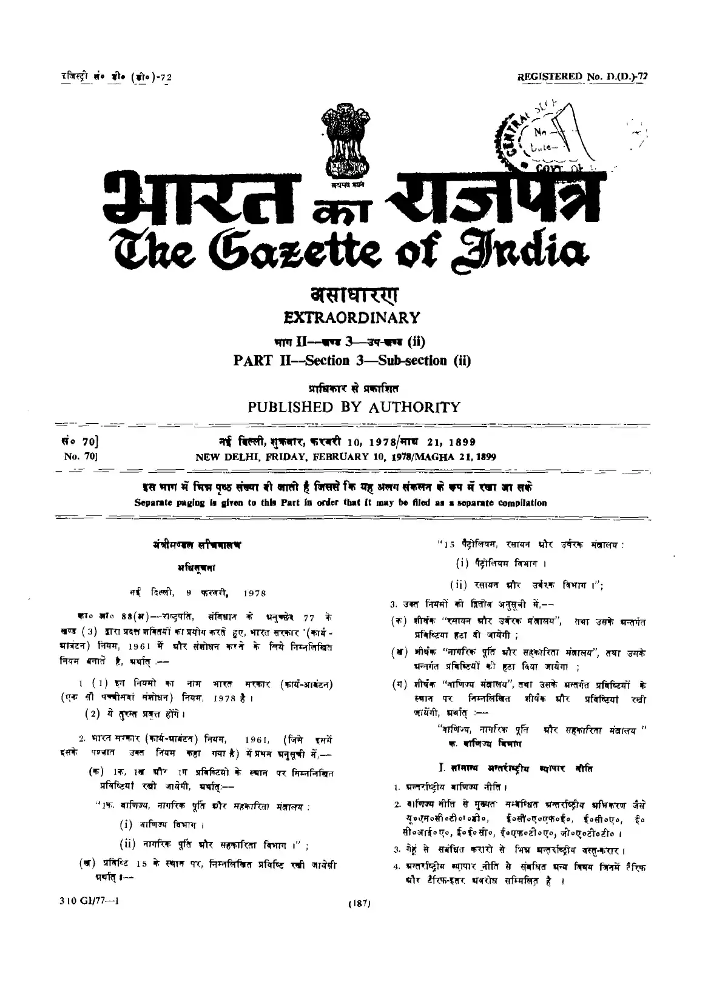
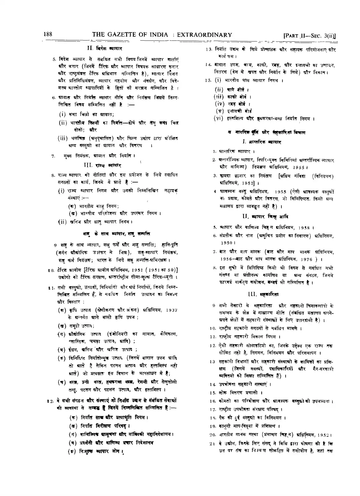
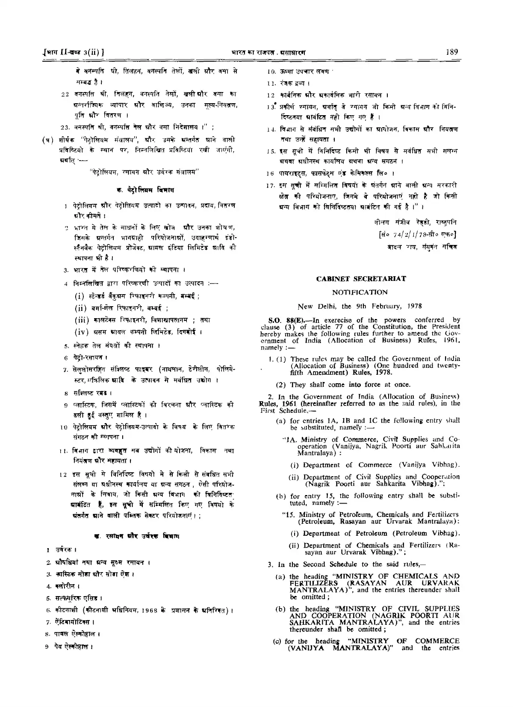
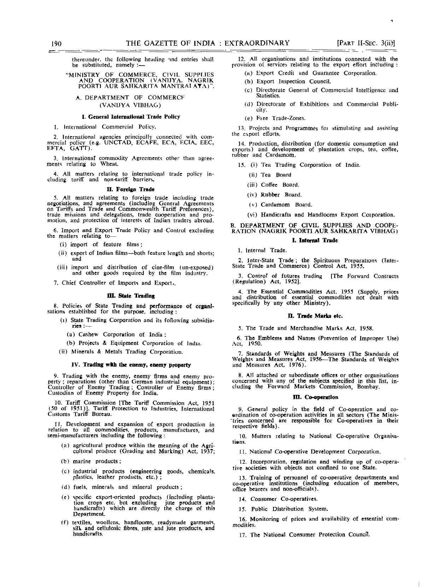
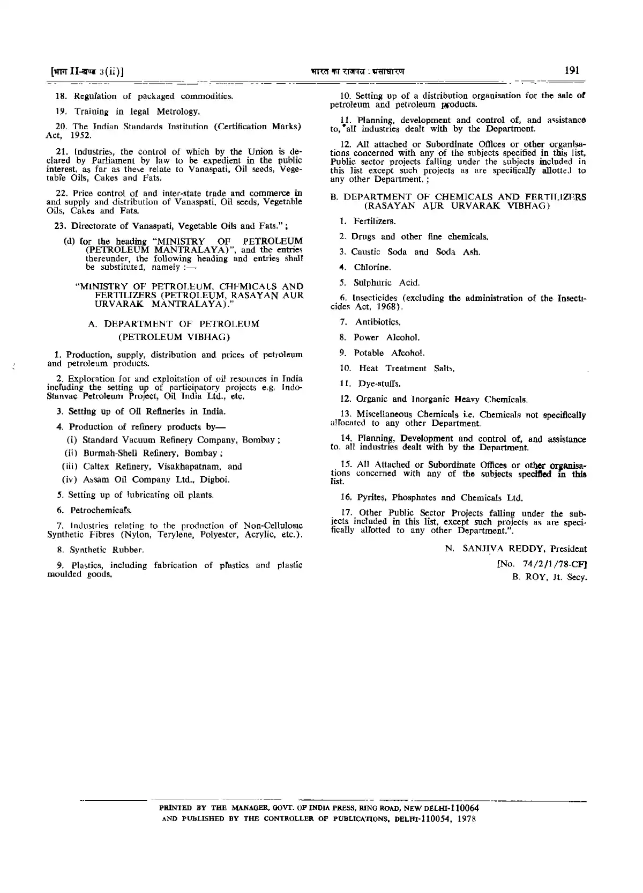

Amendment #125 (S.O. 88(E), 1978)
6 changes: 2 to the First Schedule, 4 to the Second Schedule. 6 applied
What it did to the ministries
- mergedMinistry of Civil Supplies and Cooperation and Ministry of Commerce merge into Ministry of Commerce, Civil Supplies and Cooperation change 1, 4, 5 · histories: Civil Supplies and Cooperation, Commerce, Commerce and Civil Supplies
- mergedMinistry of Chemicals and Fertilisers and Ministry of Petroleum merge into Ministry of Petroleum, Chemicals and Fertilizers change 1, 2, 3, 6 · histories: Chemicals and Fertilisers, Petroleum, Petroleum, Chemicals and Fertilizers
The order, page by page
Page 1 of 6

Page 2 of 6

Page 3 of 6

12345Schedule 1 › entry 1A; Schedule 1 › entry 1B; Schedule 1 › entry 1C
- 1A. Ministry of Commerce, Civil Supplies and Cooperation
- i. Department of Commerce
- ii. Department of Civil Supplies and Cooperation
applied at schedule 1 › ministry 1A in the Rules after #125
Schedule 1 › entry 15
- 15. Ministry of Petroleum, Chemicals and Fertilizers
- i. Department of Petroleum
- ii. Department of Chemicals and Fertilizers
applied at schedule 1 › ministry 15 in the Rules after #125
Schedule 2 › MINISTRY OF CHEMICALS AND FERTILIZERS
applied at schedule 2 › ministry in the Rules after #125
states inferred loose
Schedule 2 › MINISTRY OF CIVIL SUPPLIES AND COOPERATION
applied at schedule 2 › ministry in the Rules after #125
Schedule 2 › MINISTRY OF COMMERCE
- MINISTRY OF COMMERCE, CIVIL SUPPLIES AND COOPERATION (VANIJYA, NAGRIK POORTI AUR SAHKARITA MANTRAI AYA)
- A. DEPARTMENT OF COMMERCF
- I. General International Trade Policy
- 1. International Commercial Policy.
- 2. International agencies principally_connected with commercial policy (e.g. UNCTAD, ECAFE, ECA, ÈCIA, EEC EFTA, GATT).
- 3. International commodity Agreements other than agreements relating to Wheat.
and 65 more
- 4. All matters relating to international trade policy including tariff and non-tariff barriers.
- II. Foreign Trade
- 5. All matters relating to foreign trade including trade negotiations, and agreements (including General Agreements on Tariffs and Trade and Commonwealth Tariff Preferences) trade missions and delegations, trade cooperation and promotion, and protection of interests of Indian traders abroad.
- 6. Import and Export Trade Policy and Control excluding the matters relating to
- i. import of feature films
- ii. export of Indian films--both feature length and shorts and
- iii. import and distribution of cine-film (un-exposed) and other goods required by the film industry.
- 7. Chief Controller of Imports and Exports.
- III. State Trading
- 8. Policies of State Trading and performance of organisations established for the purpose, including : (1) State Trading Corporation and its following subsidiaries -
- a. Cashew Corporation of India
- b. Projects & Equipment Corporation of India.
- ii. Minerals & Metals Trading Corporation.
- IV. Trading with the enemy, enemy property
- 9. Trading with the enemy, enemy firms and enemy property; reparations (other than German industrial equipment) Controller of Enemy Trading; Controller of Enemy firms Custodian of Enemy Property for India.
- 10. Tariff Commission [The Tariff Commission Act, 1951 (50 of 1951)], Tariff Protection to Industries, International Customs Tariff Bureau.
- 11. Development and expansion of export production in relation to all commodities, products, manufactures, and semi-manufacturers including the following:
- a. agricultural produce within the meaning of the Agricultural produce (Grading and Marking) Act, 1937
- b. marine products
- c. industrial products (engineering goods, chemicals plastics, leather products, etc.)
- d. fuels, minerals and mineral products
- e. specific export-oriented products (including plantation_crops etc, but excluding jute products and handicrafts) which are directly the charge of this Department.
- f. textiles, woollens, handlooms, readymade garments silk and cellulosic fibres, jute and jute products, and handicrafts.
- 12. All organisations and institutions connected with the provision of services relating to the export effort including :
- a. Export Credit and Guarantee Corporation.
- b. Export Inspection Council.
- c. Directorate General of Commercial Intelligence and Statistics.
- d. Directorate of Exhibitions and Commercial Publicity.
- e. Free Trade-Zones.
- 13. Projects and Programmes for stimulating and assisting the export efforts.
- 14. Production, distribution (for domestic consumption and exports) and development of plantation crops, tea, coffee rubber and Cardamom.
- 15.
- i. Tea Trading Corporation of India.
- ii. Tea Board
- iii. Coffee Board.
- iv. Rubber Board.
- v. Cardamom Board.
- vi. Handicrafts and Handlooms Export Corporation.
- B. DEPARTMENT OF CIVIL SUPPLIES AND COOPE- RATION
- I. Internal Trade
- 1. Internal Trade.
- 2. Inter-State Trade; the Spirituous Preparations (Inter- State Trade and Commerce) Control Act, 1955.
- 3. Control of futures trading [The Forward Contracts (Regulation) Act, 1952].
- 4. The Essential Commodities Act, 1955 (Supply, prices and distribution of essential commodities not dealt with specifically by any other Ministry).
- II. Trade Marks etc.
- 3. The Trade and Merchandise Marks Act, 1958.
- 6. The Emblems and Names (Prevention of Improper Use) Act, 1950.
- 7. Standards of Weights and Measures (The Standards of Weights and Measures Act, 1956-The Standards of Weights and Measures Act, 1976).
- 8. All attached or subordinate offices or other organisations concerned with any of the subjects specified in this list, including the Forward Markets Commission, Bombay.
- III. Co-operation
- 9. General policy in the field of Co-operation and coordination of co-operation activities in all sectors (The Ministries concerned are responsible for Co-operatives in their respective fields).
- 10. Matters relating to National Co-operative Organisations.
- 11. National Co-operative Development Corporation.
- 12. Incorporation, regulation and winding up of co-operative societies with objects not confined to one State.
- 13. Training of personnel of co-operative departments and co-operative institutions (including education of members office bearers and non-officials).
- 14. Consumer Co-operatives.
- 15. Public Distribution System.
- 16. Monitoring of prices and availability of essential commodities.
- 17. The National Consumer Protection Council.
- 18. Regulation of packaged commodities.
- 19. Training in legal Metrology.
- 20. The Indian Standards Institution (Certification Marks) Act, 1952.
- 21. Industries, the control of which by the Union is declared by Parliament by law to be expedient in the public interest, as far as these relate to Vanaspati, Oil seeds, Vegetable Oils, Cakes and Fats.
- 22. Price control of and inter-state trade and commerce in and supply and distribution of Vanaspati, Oil seeds, Vegetable Oils, Cakes and Fats.
- 23. Directorate of Vanaspati, Vegetable Oils and Fats.
applied at schedule 2 › ministry MINISTRY OF COMMERCE in the Rules after #125
read page break
Page 4 of 6

Page 5 of 6

6Schedule 2 › MINISTRY OF PETROLEUM
- MINISTRY OF PETROLEUM, CHEMICALS AND FERTILIZERS
- A. DEPARTMENT OF PETROLEUM
- 1. Production, supply, distribution and prices of petroleum — and petroleum products.
- 2. Exploration for and exploitation of oil resources in India including the setting up of participatory projects e.g. Indo- Stanvac Petroleum Project, Oil India Ltd., etc.
- 3. Setting up of Oil Refineries in India.
- 4. Production of refinery products by-
and 30 more
- i. Standard Vacuum Refinery Company, Bombay
- ii. Burmah-Shell Refinery, Bombay
- iii. Caltex Refinery, Visakhapatnam, and
- iv. Assam Oil Company Ltd., Digboi.
- 5. Setting up of lubricating oil plants.
- 6. Petrochemicals.
- 7. Industries relating to the production of Non-Cellulosic Synthetic Fibres (Nylon, Terylene, Polyester, Acrylic, etc.).
- 8. Synthetic Rubber.
- 9. Plastics, including fabrication of plastics and plastic moulded goods. PRINTED BY THE MANAGER, GOVT. OF
- 10. Setting up of a distribution organisation for the sale of petroleum and petroleum products.
- 11. Planning, development and control of, and assistance to, "all industries dealt with by the Department.
- 12. All attached or Subordinate Offices or other organisations concerned with any of the subjects specified in this list Public sector projects falling under the subjects included in this list except such projects as are specifically allotted to any other Department.
- B. DEPARTMENT OF CHEMICALS AND FERTILIZERS
- 1. Fertilizers.
- 2. Drugs and other fine chemicals.
- 3. Caustic Soda and Soda Ash.
- 4. Chlorine.
- 5. Sulphuric Acid.
- 6. Insecticides (excluding the administration of the Insecticides Act, 1968).
- 7. Antibiotics.
- 8. Power Alcohol.
- 9. Potable Alcohol.
- 10. Heat Treatment Salts.
- 11. Dye-stuffs.
- 12. Organic and Inorganic Heavy Chemicals.
- 13. Miscellaneous Chemicals i.e. Chemicals not specifically allocated to any other Department.
- 14. Planning, Development and control of, and assistance to, all industries dealt with by the Department.
- 15. All Attached or Subordinate Offices or other organisations concerned with any of the subjects specified in this list.
- 16. Pyrites, Phosphates and Chemicals Ltd.
- 17. Other Public Sector Projects falling under the subjects included in this list, except such projects as are specifically allotted to any other Department.
applied at schedule 2 › ministry MINISTRY OF PETROLEUM in the Rules after #125
read page break
Page 6 of 6
How this document was read
Edits to the reading
| Date | By | Edit | Before → after |
|---|---|---|---|
| 12 November 2026 | claude | word corrected |
Changes placed by an inference rule
| Change | Rule | Status | What |
|---|---|---|---|
| 3 | loose | accepted | change 3: ministry MINISTRY OF CHEMICALS AND FERTILIZERS taken for ministry MINISTRY OF CHEMICALS AND FERTILISERS, named loosely |
From the Government of India (Allocation of Business) Rules, 1961 and their amendments, as published by the Cabinet Secretariat (cabsec.gov.in), read by orgpedia. The readings of the older scanned gazettes have known gaps.